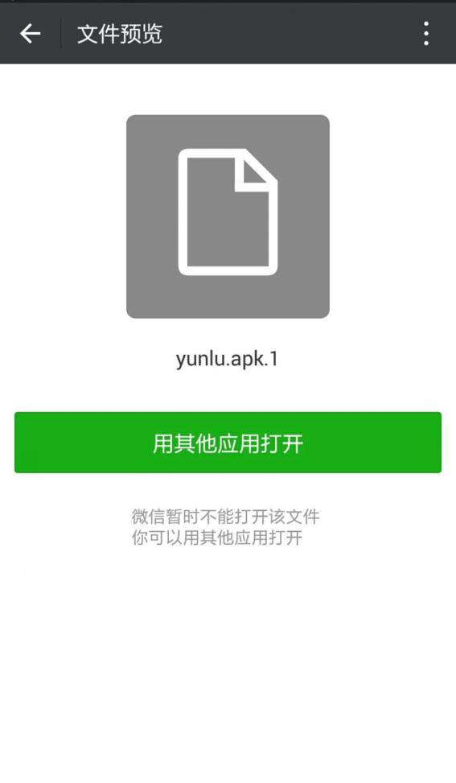
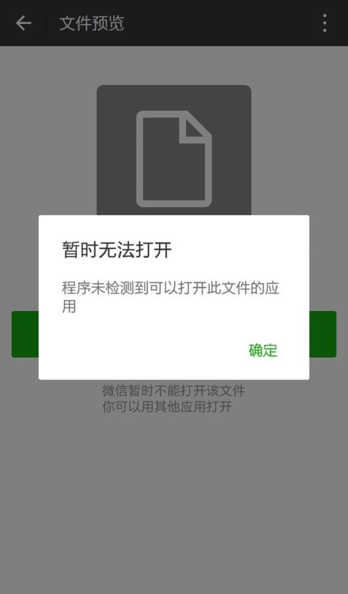
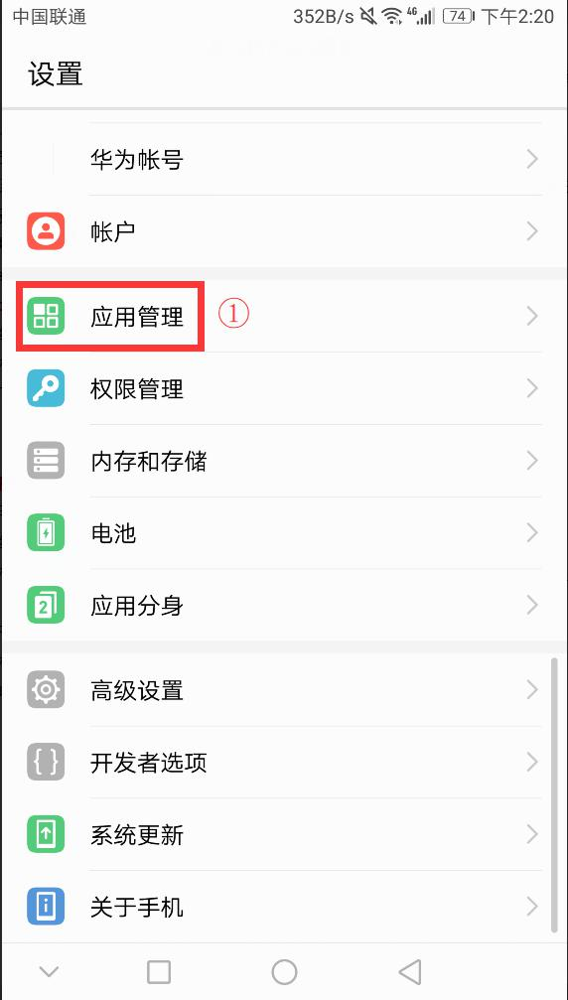
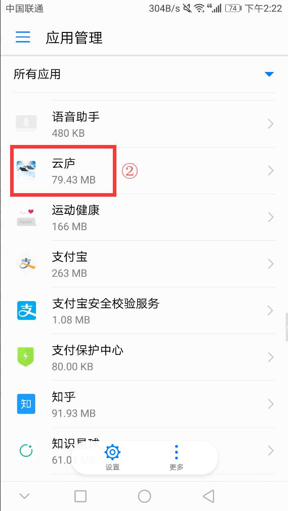
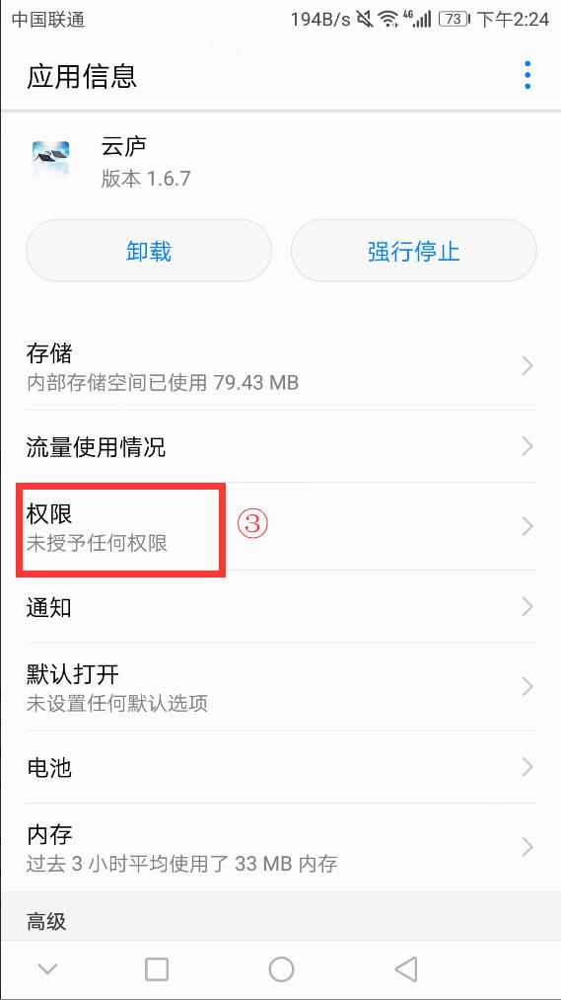
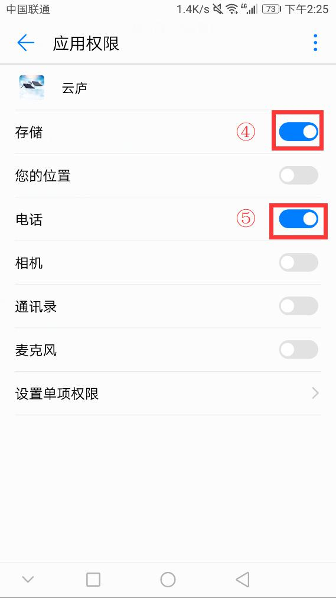

二、 下载、安装app问题
1. 如何下载app？
① 访问官网直接安装：https://www.yunlu6.com/。
② 应用宝中搜索：云庐。
③ 各大应用市场搜索：云庐。
推荐使用①、②两种途径。
④ 针对微信分享等其他途径分享，用户下载后可能出现如下无法直接安装问题：
原因：微信不支持安装第三方apk应用，请点击用其他应用打开，选择系统自带的文件管理器进行安装，或使用第三方apk管理器如应用宝，360助手等。
 2. 安装app成功后无法开启使用？
① 检查网络连接是否出错。
② 进入手机"设置">"应用管理">选中"云庐">"权限">开启app应用权限，开启存储和手机识别码权限。
   3. 无法注册？
3.1 输入手机号和图片验证码后无法跳转？
① 检查网络连接是否出错。
② 进入手机"设置">"应用管理">选中"云庐">"权限">开启app应用权限。
3.2 接收不到验证码，验证码失效？
① 检查手机是否因欠费无法接收到验证码。
② 如能接收到验证码，提示失效请联系客服。
4. 无法登录？
4.1 输入手机号和密码后闪屏无法登录？
① 检查网络连接是否出错。
② 进入手机"设置">"应用管理">选中"云庐">"权限">开启app应用权限，包括读取本机识别码和存储权限。
5. 辅设备申请登录时，主设备无法收到验证消息？
① 检查主设备网络连接是否出错。
② 部分地区、时段存在网络波动原因导致消息无法接收到，请退出主设备账号重新登录后，辅设备再次发送登录申请消息，主设备即可接收到授权辅设备登录消息。
6. 如何申请主控设备？
① 在登录账号时，辅设备会弹出提醒消息，点击"申请主控设备"，获取验证码后点击下一步即可。